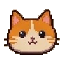

APRENDER ABRE CAMINHOSDesafio 1 de 3
O segredo da sequência
Observe a sequência e repita na mesma ordem.


Conquiste as quatro chaves e encontre seu gato na montanha.
1 de 6 lugares descobertos Lógica
Lógica
 Álgebra
Álgebra
 Formas
Formas
 Contas
Contas
Preparando sua ilha…
 Ilha do ConhecimentoUM NOVO DESAFIO NA AVENTURA
Ilha do ConhecimentoUM NOVO DESAFIO NA AVENTURAObserve a sequência e repita na mesma ordem.


0 de 4 cadeados abertos